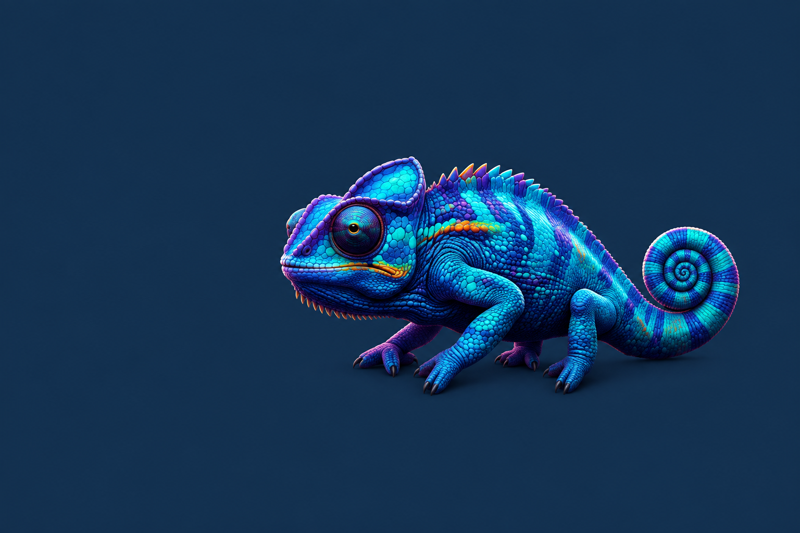
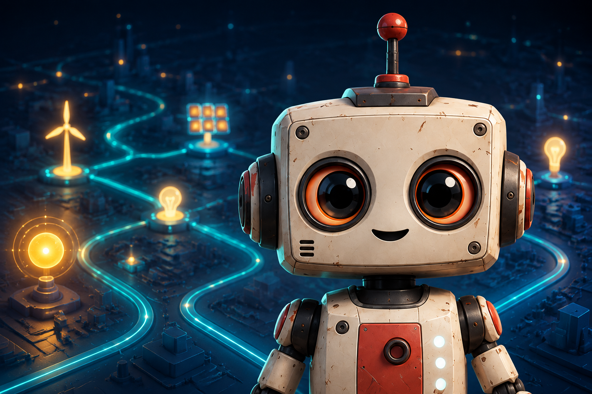

Storyline 360 · HTML5Learning Design · Storyline · Petri-Netze
Petri Nets Revisited
Didaktisch aufbereitete, englischsprachige Präsentationsfolien zur Prozessmodellierung – hier als gekürzte interaktive Arbeitsprobe.
Sechs Arbeitsproben aus Learning Design, Entwicklung und visueller Gestaltung.

Storyline 360 · HTML5Didaktisch aufbereitete, englischsprachige Präsentationsfolien zur Prozessmodellierung – hier als gekürzte interaktive Arbeitsprobe.

10 Logikspiele · HTML5Eine Sammlung browserbasierter Knobelspiele, die Kinder spielerisch an Logik, Binärcodes und weitere Informatikthemen heranführt.
 KI + Photoshop + Hand
KI + Photoshop + Hand
Durch Photoshop-Bearbeitung und zeichnerische Eingriffe wurde aus einem KI-Ausgangsbild ein veröffentlichter Konferenzheader.
 Fahrrad
Fahrrad
 Nussknacker
Nussknacker
Fahrrad und Nussknacker wurden in Illustrator nach visuellen Vorlagen konstruiert und für Physikaufgaben um Raster und Kraftvektoren ergänzt.
 01 · TikZ-Code
01 · TikZ-Code
 02 · Vektorausgabe
02 · Vektorausgabe
Parametrische Diagramme und Fachgrafiken lassen sich mit TikZ präzise, skalierbar und reproduzierbar direkt aus Code erzeugen.
 01 · Handskizze
01 · Handskizze
 02 · KI-Interpretation
02 · KI-Interpretation
Eine eigene Chamäleon-Skizze bildet die Grundlage für vier KI-generierte visuelle Interpretationen mit kontrollierter Pose und Komposition.